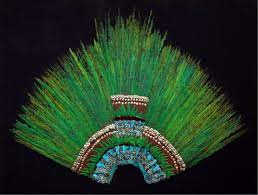

158. Ruler’s feather headdress (probably of Motecuhzoma II). Mexica (Aztec) 1428- 1520 CE Feathers (quetzal and continga)and gold.
- Form
- Made from 400 long green feathers, the tails of the sacred quetzal birds; male birds produce only two such feathers each
- The number 400 symbolizes eternity
- Function
- Ceremonial headdress of a ruler
- Part of an elaborate costume
- Context
- Only known Aztec feather headdress in the world
- Feathers indicate trading across the Aztec Empire
- Headdress possibly part of a collection of artifacts given by Motexhuzoma to Cortez for Charles V of the Holy Roman Empire
- The current dispute over ownership of the headdress; today it is housed in the Museum of Ethnology in Vienna, Austria